Создание трендов с использованием архивов, формул и скриптов
Работа с архивами
Архивы содержат исторические данные измерений, которые могут быть использованы для построения графиков. Архивы можно объединять в формулы или линии для последующего анализа.
Применение: Это позволяет визуализировать историю изменения данных на графике и анализировать прошлые значения параметров системы.
Как использовать: Выберите необходимые архивы и отобразите их на графике в виде линий.
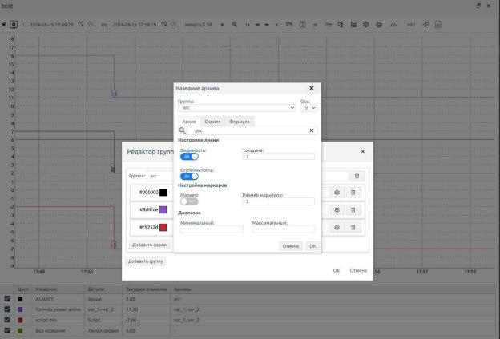
Рисунок 22. Активное окно трендов
Использование формул в трендах
Формулы, основанные на функциях Excel, дают возможность пользователю выполнять автоматические расчеты над данными. Это важно для выполнения сложных математических операций непосредственно в тренде.
Применение: Для расчета новых значений на основе существующих данных архивов.
Как использовать: Выберите нужные архивы, примените к ним формулы через редактор групп и сохраните изменения.
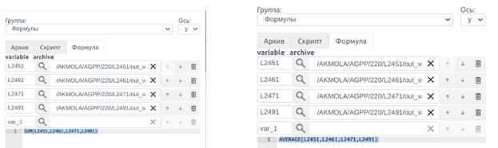
Рисунок 23. Окно для настроек формул в трендах
Использование скриптов для анализа данных
Скрипты на языке JavaScript позволяют проводить сложные вычисления и манипуляции с данными архивов, которые невозможно реализовать стандартными формулами.
Применение: Для написания кастомных расчетов и сложных алгоритмов на основе данных архивов.
Как использовать: В редакторе групп выберите архивы, затем напишите и скомпилируйте скрипт для нужных расчетов.
Настройки трендов
Изменение цвета и толщины линий
Настройка цвета и толщины линий позволяет лучше визуализировать различные параметры на графике, делая его более читабельным и удобным для анализа.
Применение: Полезно при работе с несколькими архивами одновременно.
Как использовать: В таблице параметров измените цвет и толщину линий для выделения важной информации.
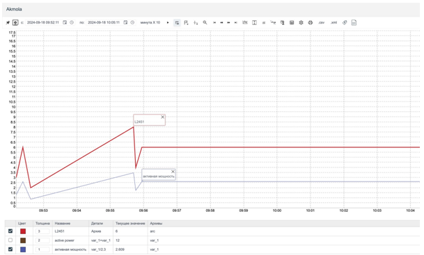
Рисунок 24. Окно трендов с примененными настройками
Настройка диапазона значений
Позволяет задавать минимальные и максимальные значения для данных, что помогает сосредоточить внимание на важных отклонениях.
Применение: Для отслеживания параметров, которые выходят за установленные пределы.
Как использовать: В редакторе серий задайте пределы значений для отображаемых данных.
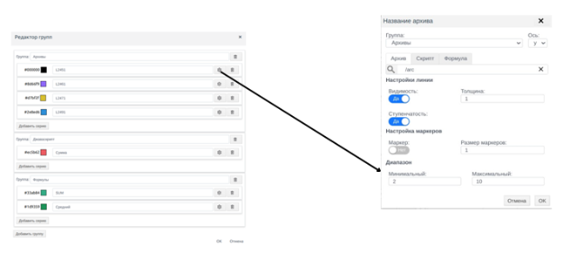
Рисунок 25. Окно настройки диапазона значений
Количество знаков после запятой
Настройка количества знаков после запятой важна для точного отображения данных на графике, особенно при работе с параметрами, требующими высокой точности.
Применение: Для отображения результатов с необходимой точностью.
Как использовать: В настройках отображения укажите количество знаков после запятой для архивов.
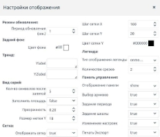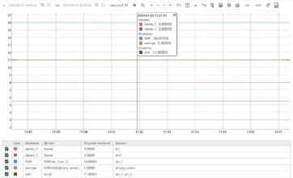
Рисунок 26. Окно настройки отображения архивов
Работа с выносками и аннотациями
Добавление и управление выносками
Выноски — это маркеры на графике, которые выделяют важные точки данных. Они позволяют лучше ориентироваться в данных и фиксировать ключевые моменты.
Применение: Для выделения экстремальных значений, резких изменений или других важных событий.
Как использовать: Для добавления выноски зажмите клавишу Alt и кликните по графику.
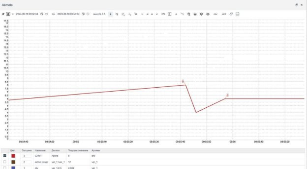
Рисунок 27. Тренды с выбранными выносками
Добавление аннотаций
Аннотации позволяют добавлять текстовые метки на график, что помогает лучше объяснять или комментировать данные для других пользователей или при анализе.
Применение: Для пояснения ключевых изменений или добавления примечаний к данным.
Как использовать: Нажмите на маркер линии и введите текст аннотации.
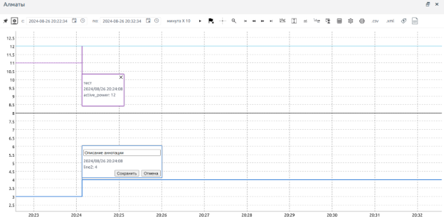
Рисунок 28. Тренды с аннотациями
Поиск и копирование архивов из мнемосхемы в тренд
Применение: Для упрощения работы с историческими данными и поддержки процесса их анализа для улучшения оперативного контроля и принятия решений.
Как использовать: В интерфейсе мнемосхемы, при клике на необходимый элемент, система позволяет скопировать путь до архива. Это действие автоматически сохраняет путь, который можно использовать в дальнейшем.
Чтобы найти нужный архив нужно нажать на значок лупы в окне Название архива:
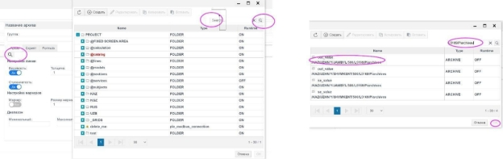
Рисунок 29. Окно для выбора архивов
Для копирования тренда или архива необходимо нажать комбинацию клавиш Ctrl + C.
Далее, скопированный путь вставляется в поле поиска, где можно добавить архив для дальнейших манипуляций, таких как отображение данных в тренде.
Рисунок 30. Окно настройки отображения архивов
Привязка тренда к структуре проекта
Применение: Привязка тренда к структуре проекта позволяет интегрировать данные о работе системы в единый графический интерфейс, что упрощает мониторинг и контроль за ключевыми параметрами объекта. Это полезно для анализа работы оборудования и его оперативного состояния, например, для отслеживания перетоков энергии, динамических характеристик оборудования, аварийных и предаварийных ситуаций. Таким образом, тренды позволяют визуализировать текущее и историческое состояние системы, что способствует более эффективному принятию решений на основе фактических данных.
Как использовать: Привязка тренда к структуре проекта осуществляется через систему тегов и мнемосхем. Для этого нужно выполнить несколько шагов:
1\. Создание тегов для привязки:
Для привязки тренда к структуре проекта необходимо создать теги, которые будут содержать данные о контролируемых точках (например, параметры оборудования). Эти теги объединяются в группы и подгруппы, что формирует логическую структуру проекта.
В редакторе тегов задаются значения, которые будут отображаться в тренде (например, текущие значения параметров, предельные значения и т.д.).
2\. Привязка свойств тренда к тегам:
Для тренда нужно задать привязку его свойств к тегам, чтобы тренд отображал данные с нужных точек системы. Это можно сделать через панель свойств элементов мнемосхемы, где привязка может выполняться: прямой привязкой (непосредственно к тэгу) или привязкой через скрипт (например, для более сложных вычислений и динамических изменений значений).
3\. Привязка событий и реакций:
Для каждого тренда можно задать реакции на изменения в тегах, используя скрипты. Это позволяет динамически изменять отображаемую информацию в тренде в зависимости от состояния тега или изменения его значений.
4\. Использование групп тегов:
Для упрощения работы с большим количеством трендов и данных, можно использовать группы тегов. Это позволяет объединить несколько связанных точек управления и параметров, и одновременно привязать их к одному или нескольким трендам.
Таким образом, привязка тренда к структуре проекта происходит через создание и конфигурирование тегов, настройку привязок в свойствах тренда и, при необходимости, использование скриптов для более сложных операций.
Остальные функции
Группировка архивов
Архивы могут быть сгруппированы по различным признакам для упрощения работы с большими объемами данных. Это помогает пользователю лучше структурировать информацию.
Применение: Для упорядочивания архивов по категориям и облегчения работы с большими наборами данных.
Как использовать: Добавьте новую группу через редактор групп и объедините нужные архивы.
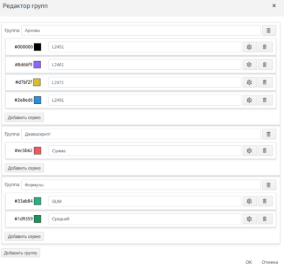
Рисунок 31. Окно управления группами архивов
Сравнение данных в разных временных интервалах
Функция позволяет сравнивать текущие значения с данными, полученными ранее, что помогает выявить изменения и анализировать тренды.
Применение: Для анализа тенденций и изменений параметров во времени.
Как использовать: Выберите необходимый временной интервал и нажмите кнопку для сравнения.
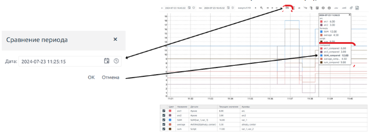
Рисунок 32. Выбор временного интервала
Скрытие архивов
Функция позволяет временно скрывать ненужные архивы, чтобы сосредоточиться на важной информации на графике.
Применение: Полезно при работе с перегруженным графиком, где отображается много архивов.
Как использовать: Нажмите на цветную пиктограмму для скрытия архива.
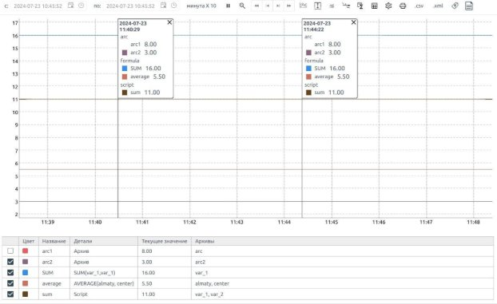
Рисунок 33. Результат скрытия архивов
Экспорт и печать данных
Выгрузка данных в различные форматы
Инструмент позволяет выгружать данные трендов в различные форматы (Excel, CSV, XML) для дальнейшего анализа или использования в других системах.
Применение: Для передачи данных другим пользователям или системам.
Как использовать: В меню экспорта выберите формат для выгрузки данных.
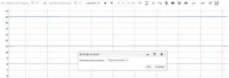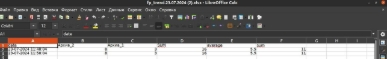
Рисунок 34. Окно для выгрузки данных в трендах
Печать трендов
Графики можно распечатывать напрямую из системы без предварительного экспорта, что упрощает создание отчетов. В окошке параметров печати можно сохранить в формате PDF, выбрав опцию в поле “Принтер”.
Применение: Для создания печатных отчетов с графиками.
Как использовать: Нажмите кнопку печати и настройте параметры вывода.
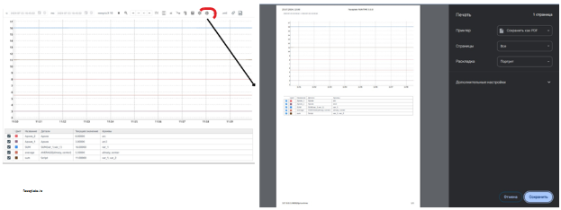
Рисунок 35. Окно для печати и сохранения трендов в формате PDF
Выгрузка данных в различные форматы
Виртуальная клавиатура — это элемент интерфейса, отображающий клавиши на экране устройства для удобного и безопасного ввода текста без физической клавиатуры.
Применение: Для ввода данных без помощи физической клавиатуры, а также при необходимости внесения определенных символов.
Как использовать: Выберите иконку виртуальной клавиатуры. Нажмите на поле ввода данных. Нажимайте на клавиши виртуальной клавиатуры для ввода символов; набранные символы будут автоматически появляться в активном текстовом поле.